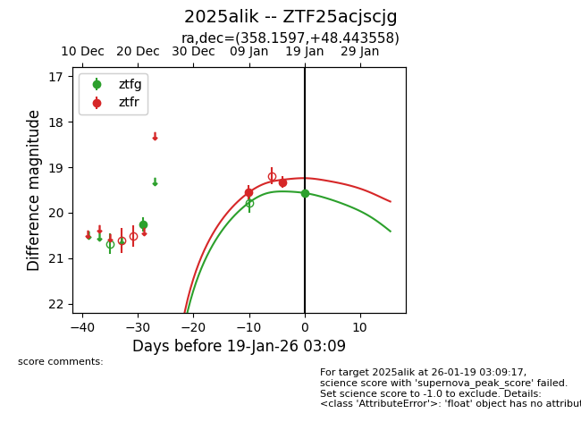
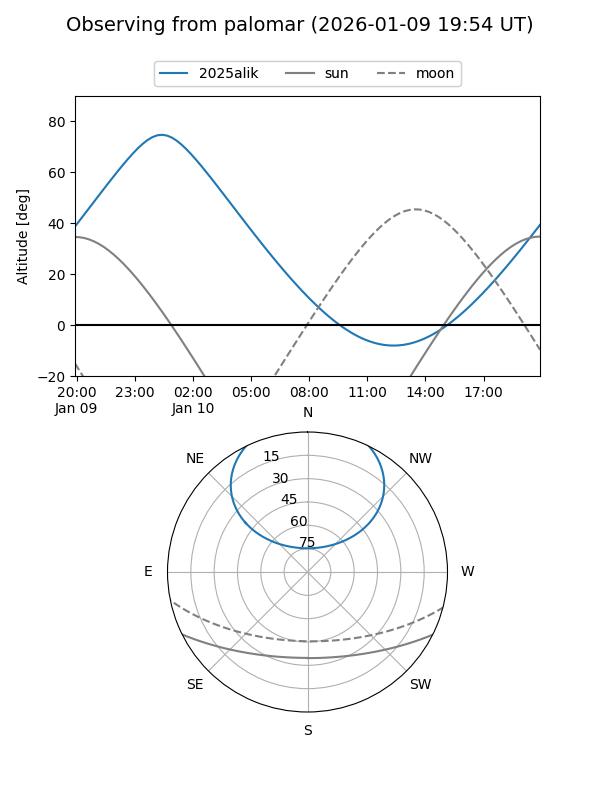
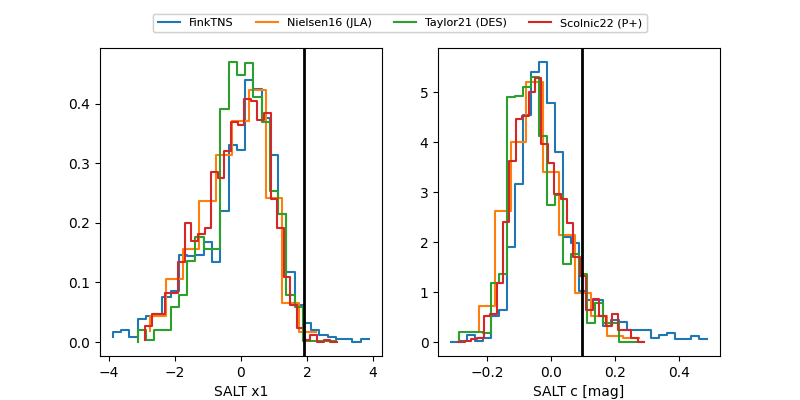

2025alik
Target 2025alik at 2026-01-19 03:10
Aliases and brokers:
FINK: link
Lasair: link
ALeRCE: link
TNS: link
YSE: link
alt names
ZTF25acjscjg (ztf,fink_ztf)
2025alik (tns,yse)
Coordinates:
equatorial (ra, dec) = 358.1597,+48.44356
equatorial (HMS+DMS) = 23:52:38.34,+48:26:36.81
galactic (l, b) = (112.9720,-13.28781)
Flags:
Photometry:
last ztfg=19.56, ztfr=19.32
2 ztfg, 2 ztfr detections
Lightcurve

Visibility


Additional plots
